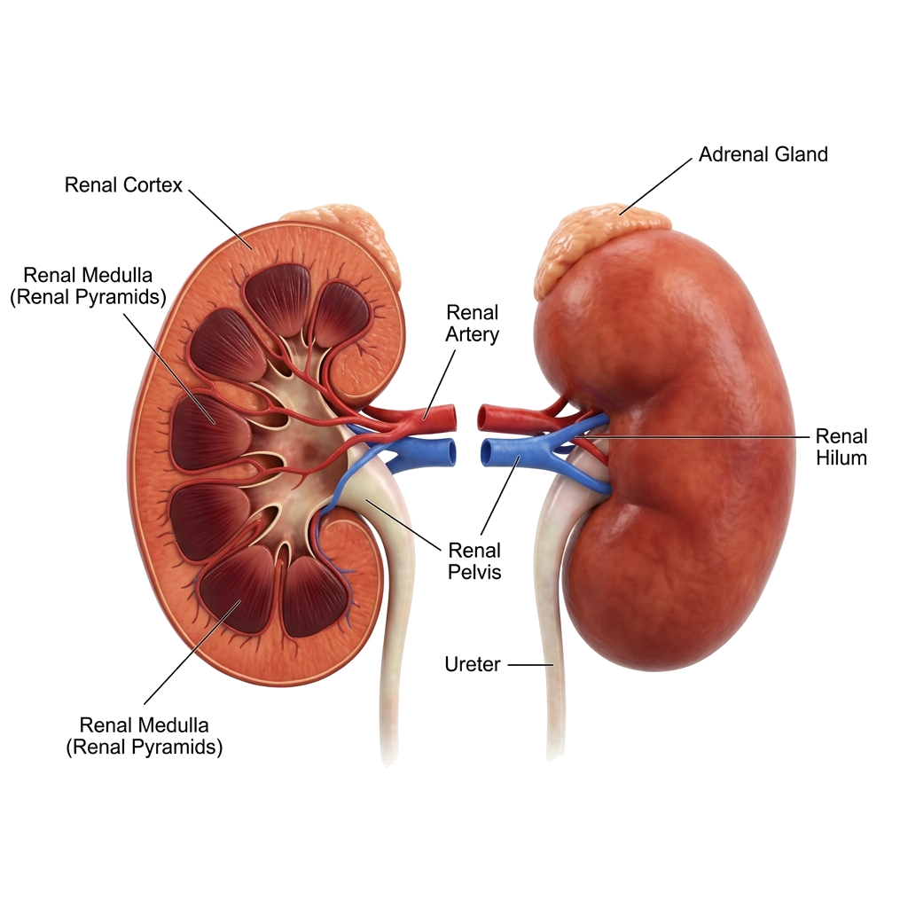

Empowering nephrologists with highly accurate, transparent, and explainable AI. Powered by XGBoost and SHAP for clinical trustworthiness.
Model Accuracy
97.6%
AUC-ROC Score
0.9913

Sensitivity
98.3%
Specificity
96.7%
2,000
Patient Records
24
Clinical Biomarkers
8
Models Evaluated
0
Data Leakage
Train-Test split enforced strictly before SMOTE, eliminating the common inflation flaw in existing papers.
Mathematical decisions are translated into per-patient biomarker impacts for deep clinical transparency.
Rigorous evaluation of 8 algorithms using 10-Fold Stratified CV to prove XGBoost's superiority.
Features aren't just variables; they are mapped directly to their pathophysiological significance.
A fully functional, publicly accessible web tool bridging the gap between research and clinical practice.
2,000 Records
Median/Mode
Zero Leakage
Train set only
GridSearchCV
Explainability
Run the diagnostic analysis to view the AI verdict and SHAP biomarker explanations here.
Top 10 features driving this specific diagnosis.
Accuracy
97.6%
AUC
0.9913
2241016196
2241019425
2241002190
2241016198
2241013093